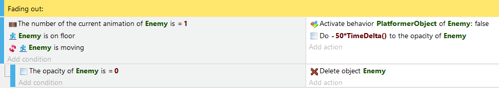
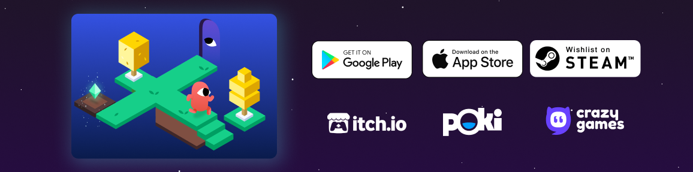

无代码游戏引擎的务实派——为什么我把 GDevelop 写进了推荐清单
无代码做游戏的工具不少，但 GDevelop 的事件表逻辑、多端发布和云同步把它跟玩具级工具拉开了距离。这篇从同类格局讲起，聊它的三个差异化亮点、代价，以及什么样的人该选它。
无代码做游戏这件事，圈子里长期有个误区——要么把这类工具当小孩玩具，要么反过来拿专业引擎的标准去卡它。两个极端都帮不上正在纠结选哪款的人。
我用过 Construct、GameMaker，也摸过 Godot 写点小 demo，GDevelop 的官网上能直接下载安装，它是这品类里让我愿意长期装着的一个。不是因为它最强大，恰恰相反，是因为它把「够用」这件事做在了刀刃上。同类工具要么拖拽积木太玩具、脚本门槛又突然跳得高；要么一口气塞了 2D 3D 粒子编辑器全套但每样都差口气。GDevelop 的取舍方向很清晰——它只盯着休闲小游戏这个赛道，把从想法到上线的每一步做扎实，不搞大而全。
它的差异化在哪
从样本文档和日常使用看，GDevelop 有三个别家没做好或者干脆没做的点。
事件系统：不是拖拽积木，也不是代码
多数无代码工具的"逻辑"是两种极端：要么是 Scratch 式的积木块拼接，表现力有限；要么直接让你写脚本，所谓"无代码"只是 marketing。GDevelop 夹在中间——事件表用条件和动作的自然语言条目来表达逻辑，每帧从上到下跑一遍，条件全满足就执行动作。写法是这样的：
条件：玩家 与 金币 发生碰撞动作：删除 金币动作：把 变量 Score 的值 加 1
就这三行，一个拾取金币的机制完成。再加一条 Score ≥ 10 时切换场景，玩法闭环就有了。看起来简单，但它不是玩具——子事件、循环事件、事件函数都有，需要写复杂逻辑时还能直接嵌入 JavaScript 代码事件。熟悉编程的人能看懂对象拾取（动作只影响条件筛选出的那些实例，不是全场）这件事有多重要，这是很多拖拽工具逻辑错乱的根源。

发布形态：网页为主，一条链路跑通
不少人低估了"发网页"这件事的价值。GDevelop 编辑器里点分享，选 gd.games，填信息提交，几分钟就能拿到游戏页链接——免费托管、无限次发布、自带反馈和数据。朋友试玩、社群分享，到此为止就够了。
想面向更大玩家基盘也有路：导出 HTML5 文件夹打包成 zip，按目标平台流程提交。GDevelop文档里列的平台包括 itch.io（个人作品集首选、自定义页面）、Newgrounds（老牌社区评审上线）、CrazyGames 和 Poki（商业平台有流量分成但要接 SDK）、还有自己传对象存储完全自主引流。各平台要点、上传方式、是否需要平台 SDK 扩展，一页说清。这点 Construct 也能导出，但 GDevelop 对国内用户来说路径更直观，gd.games 的免费托管也省了自己找虚拟主机的麻烦。

多端云同步：手机真的能干活
GDevelop 有安卓和 iOS 版 App——事件编辑、调参数、看预览都能在触屏上完成，项目跟电脑端云端互通。我试过在地铁上改一个变量数值，回电脑端打开就生效，这个体验不是噱头。
同类工具要么根本没有移动端，要么移动端只能预览不能编辑（或者编辑体验等于残废）。GDevelop 手机版的定位很明确：不是让你在手机上从零做项目，是让你通勤路上能改参数、调行为、看预览。配合云端项目同步，多设备切换这件事真的通了。安卓安装也不难，Google Play 直接装，没 Play 商店的设备从官方下载页面拿 APK 就行，版本 1.0.257 体积约 94MB。
这些优势的代价
GDevelop 不是银弹，它的优势来自几个明确的取舍。
学习曲线不是零。事件表看起来简单，但对象拾取规则、子事件的作用域、循环事件的对象遍历逻辑这些概念，第一次上手会懵。文档里有完整的入门路线：第一天过引导教程理解三个核心词，第二三天用平台跳跃模板改关卡，第四五天开空白项目亲手写事件，第六七天导出网页分享。跟着走一周能做出第一个完整的小游戏，跳过引导直接开干的话大概率会卡。
免费档有上限。云端项目上限 3 个，做多了要及时删废项目腾位置。商业平台 SDK 接入（CrazyGames、Poki 这类有分成的）虽然有官方扩展，但还是要按文档配几个事件、用平台本地调试工具过一遍，不是挂上扩展就完事。
3D 能力有限。文档里提了 3D 支持，但对比 Godot 或 Unity 的完整 3D 工作流，差距明显。GDevelop 的 3D 更准确地说是 2.5D 或简单 3D 场景搭建，复杂的 3D 游戏别选它。这点它自己也很坦诚——引擎定位就是 2D 和休闲向，不跟大厂抢赛道。
选购结论
什么样的人该选 GDevelop？想快速做出休闲小游戏（平台跳跃、塔防、轻量解谜）、愿意花一周时间理解事件表逻辑、目标是网页发布或小游戏平台上架的人。特别是如果你不想从零学一门引擎的脚本语言，但又不想被拖拽积木的表现力卡死，GDevelop 是这个区间里最务实的选择。
什么样的人别选？想做 3A 品质项目、或者已经会一门语言想直接上专业引擎的人。GDevelop 的定位很窄，它不试图覆盖所有人，这点反而帮它把核心体验做扎实了。
最后说一句明确的推荐语：如果你是第一次做游戏、或者想在业余时间快速出一款能分享的网页小游戏，GDevelop 是目前无代码品类里性价比最高的起点。关于 GDevelop 的中文整理资料，我也同步维护在GitHub、Gitee 和 GitCode，方便不同网络环境下的朋友查阅。